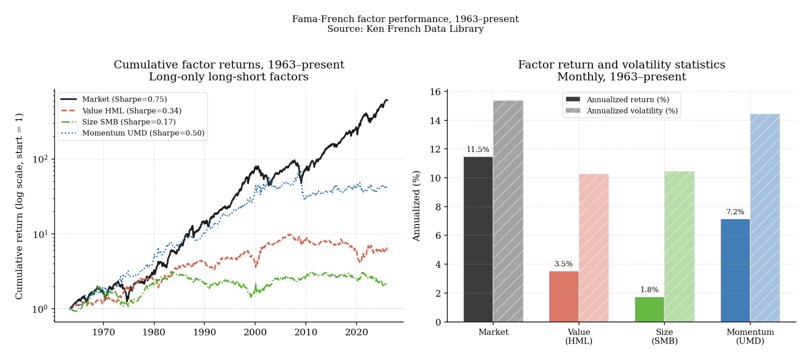
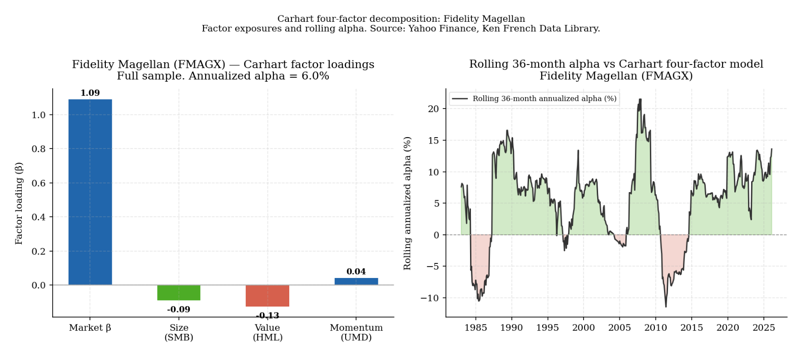
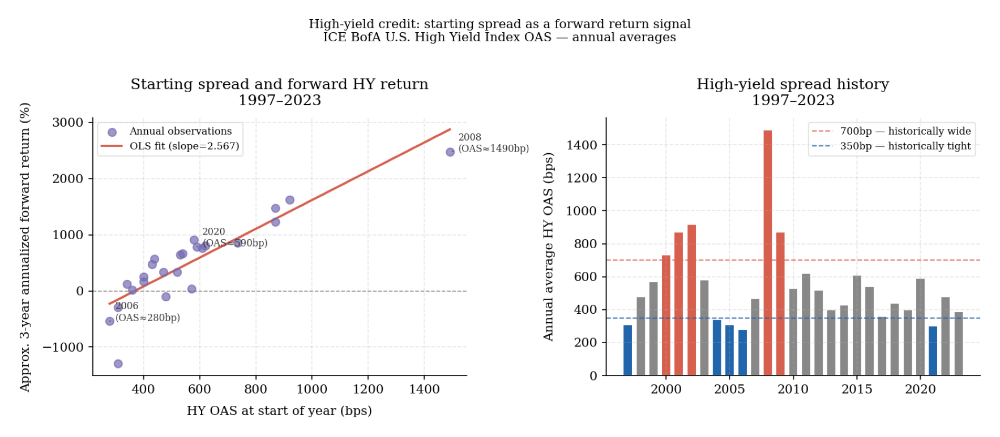
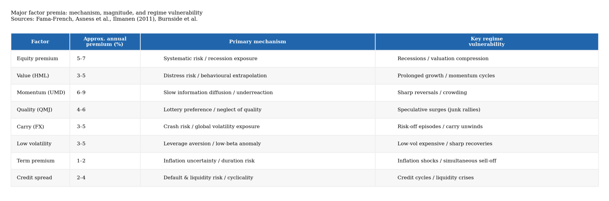
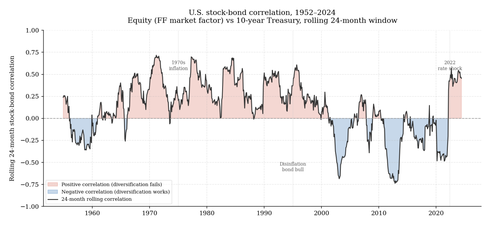

4. Return sources, factor structure, and the anatomy of a portfolio
If edges are difficult to sustain and most active management fails to beat its benchmark after costs, the natural question is not how to find better managers. It is more fundamental: where do investment returns actually come from, and can they be accessed more honestly than through discretionary stock selection?
This section develops a taxonomy of return sources. It is not a detour into theory. It is the foundation for portfolio construction, which section 5 covers, and for expected return estimation, which section 6 covers. Neither can be done honestly without first understanding what kind of return is being constructed and estimated.
The structure of return: beta, factor, and alpha
The cleanest way to organize return sources is through three nested layers, each more demanding in its requirements than the one before.
Market beta is the return associated with participating in a major asset class — equities, investment-grade bonds, sovereign duration, broad commodity indices. It is not manager skill. It is the compensation available to any investor willing to hold the market through its natural volatility and drawdown. The theoretical foundation comes from the Capital Asset Pricing Model, developed independently by Sharpe and Lintner in the mid-1960s (Sharpe, 1964). The CAPM’s central claim is that in equilibrium, the expected return on any asset above the risk-free rate is proportional to its sensitivity to the market portfolio — because only systematic, undiversifiable risk is rewarded. An investor can eliminate firm-specific risk through diversification, so the market will not compensate for it. What cannot be diversified away is exposure to broad economic conditions, and that is what beta measures. The CAPM is a simplification — empirically, markets have multiple priced risks rather than one — but its core insight survives in all subsequent factor models: broad market participation earns a return because it involves bearing real economic risk, not because it requires skill in picking securities.
Systematic factor exposure sits between broad market beta and pure residual alpha. It consists of persistent return drivers that appear across securities, geographies, and time periods, and that can be captured through rules-based implementation without requiring proprietary information or continuous active judgment. Fama and French extended the CAPM by documenting that small-cap and value stocks had historically earned returns above what their market beta alone could explain (Fama & French, 1993). Their three-factor model added size (SMB — small minus big) and value (HML — high minus low book-to-price) as additional priced factors. Carhart subsequently added momentum (UMD — up minus down) as a fourth factor, capturing the tendency of recent winners to continue outperforming recent losers in the medium term (Carhart, 1997). Asness, Moskowitz, and Pedersen then showed that value and momentum premia appear with consistent sign across eight diverse markets and asset classes — equities, bonds, currencies, and commodities — which is substantially stronger evidence than single-market findings and is difficult to reconcile with pure data mining (Asness et al., 2013).
The chart below shows the cumulative performance of these factors since 1963 alongside their annualized return and volatility statistics. The momentum factor (UMD) has produced the highest annualized return but with considerable volatility and periodic sharp reversals. The value factor (HML) has had a more volatile path, with an extended period of underperformance from 2017 to 2020 before partially recovering. The size factor (SMB) has been the weakest in recent decades. All three factors earn positive returns over the full sample, but none does so smoothly, and none does so in a way that suggests the premium can be harvested without bearing real discomfort.
Alpha in the strict sense is the return that remains after broad market exposure and all identifiable systematic factor exposures have been accounted for — return that cannot be explained by leverage or mechanical exposure to known return drivers and that persists across different market regimes. Genuine alpha requires three things simultaneously: an information advantage not already reflected in price, implementation quality that preserves that advantage from idea to execution, and persistence under competition as other investors discover the same edge. Most apparent alpha fails one of these three tests when examined carefully. What looks like alpha often resolves, as factor models improve, into previously unidentified systematic exposure.
The Fidelity Magellan fund provides a concrete illustration of this decomposition. Magellan is the most famous actively managed equity fund in history, associated with Peter Lynch’s exceptional run from 1977 to 1990. The chart below shows the Carhart four-factor decomposition of Magellan’s full return history available from Yahoo Finance. The left panel shows the factor loadings across the full sample — the fund has had meaningful market beta, modest positive size and value exposure, and some momentum loading. The right panel shows the rolling 36-month annualized alpha after accounting for all four factors. The alpha was substantially positive during the Lynch era, then oscillated around zero for most of the subsequent period. The decomposition separates what was systematic factor exposure — available to any investor at low cost through rules-based strategies — from what required genuine skill. Both existed, but in very different proportions across different periods.

This separation matters not to diminish skilled managers but to make performance attribution honest. A portfolio that earned strong returns during a period when growth stocks dominated deserves scrutiny about how much of that return came from market beta, how much from implicit growth factor exposure, and how much — if any — from genuine stock selection. Without that decomposition, the return is self-explanatory only in the sense that it happened.
Risk premia are compensation for bearing genuine discomfort
Most of the return available at the beta and factor levels is best understood as compensation for bearing a form of risk or discomfort that other investors are unwilling or unable to absorb without payment.
The equity risk premium is the most familiar example. Long-run real equity returns have historically exceeded those of cash by several hundred basis points annually, but that excess is earned through genuine exposure to business cycles, recession risk, earnings volatility, and episodes of severe drawdown. Fama and French document that the historical equity premium is large in unconditional terms but is earned through a distribution that includes 1929–1932, 1973–1974, 2000–2002, and 2008–2009 (Fama & French, 2004). An investor who wants the premium must hold through those periods. The premium is not paid in advance.
The same logic applies to duration. Longer-maturity government bonds have historically yielded more than short-term instruments, partly as compensation for inflation uncertainty and partly for the risk that interest rates move adversely before maturity. That compensation is not constant — the term premium turned sharply negative in the post-2008 quantitative easing period before reasserting itself in 2022 — but as a long-run average it reflects real risk bearing (Adrian et al., 2013).
Credit spread follows the same pattern with more complexity. Investment-grade corporate bonds have historically yielded more than equivalent government bonds, and high-yield bonds more still. That spread contains several components: expected default losses, unexpected default risk, liquidity premia, and cyclical vulnerability — the tendency for credit spreads to widen precisely when economic conditions are weakening and the investor’s broader portfolio is already under pressure. Friewald, Wagner, and Zechner document that a significant component of credit returns is explained by equity-like risk factors, meaning that high-yield behaves more like an equity sub-asset than a diversifying fixed-income instrument in stress periods (Friewald et al., 2014).
The starting spread level has historically been the most informative predictor of medium-horizon forward returns in high-yield credit. The chart below illustrates this relationship using annual average OAS data from 1997 to 2023. The scatter on the left shows that years beginning with wide spreads — such as 2002 and 2008 — have historically been followed by strong forward returns, while years beginning with tight spreads — such as 2006 and 2021 — have preceded weaker returns. The bar chart on the right shows the full spread history, with 700 basis points and 350 basis points as approximate reference levels for historically wide and tight conditions.

Carry across currency markets presents a similar case. The strategy of borrowing in low-yielding currencies and investing in high-yielding ones has produced positive average returns over long samples, but those returns are punctuated by sharp reversals during episodes of global risk aversion. Burnside, Eichenbaum, Kleshchelski, and Rebelo find that carry returns are strongly associated with exposure to global downside risk: the strategy earns a steady premium and suffers concentrated losses when volatility spikes (Burnside et al., 2011). The premium is real. The pain attached to it is also real.
A useful consequence of framing premia this way is that it clarifies what should be expected in stress. A credit portfolio that has produced stable spread income for several years without a significant default cycle has not escaped the risk embedded in credit — it has simply not yet experienced the conditions under which that risk expresses itself.
Factor premia: risk, structure, or behavior?
Not all persistent return premiums fit cleanly into the compensation-for-risk framework. Some appear to arise from structural features of how markets are organized, from behavioral tendencies among participants, or from a combination that does not reduce to classical risk.
Momentum is the clearest example of this ambiguity. The magnitude and consistency of the momentum effect across markets and asset classes is difficult to explain as pure compensation for systematic risk, since momentum portfolios have modest or negative loading on classical macro risk factors. The most credible explanations involve gradual information diffusion, institutional underreaction followed by trend-chasing, and the benchmark dynamics that cause managers to accumulate recently performing positions (Hong & Stein, 1999). These are behavioral and structural mechanisms — which is why momentum is also more vulnerable to sudden reversal when positioning becomes crowded and the information cascade that sustained it reverses.
Value has a more contested interpretation. Whether value reflects compensation for distress risk, a behavioral tendency to overprice growth and underprice recovery, or both is still an open question (Fama & French, 1993; Lakonishok et al., 1994). What is clearer is that value requires tolerance for extended underperformance — as the 2017–2020 episode illustrated, a structurally sound factor can underperform a cap-weighted index for three years or more without the underlying logic being broken.
Quality — measured through profitability, earnings stability, low leverage, and capital efficiency — is arguably the most economically intuitive of the major equity factors. Asness, Frazzini, and Pedersen show that high-quality firms have historically earned excess returns not explained by their valuations (Asness et al., 2019). The mechanism is plausible: investors systematically underweight stable, high-return businesses and overweight speculative ones, perhaps because the former appear boring and the latter offer lottery-like upside.
The table below summarizes the major factor premia alongside their approximate historical magnitudes, proposed mechanisms, and primary regime vulnerabilities. The mechanism column matters as much as the premium column: a factor whose return reflects durable risk bearing will behave differently from one whose return reflects behavioral mispricing, and the two should not be managed identically.

Risk parity: the right insight with the wrong regime assumptions
Risk parity takes the risk budgeting logic to its natural conclusion: if the goal is to equalize risk contributions across asset classes, and if lower-volatility assets such as government bonds have historically offered adequate risk-adjusted returns, then a portfolio that levers those assets to match equity-like volatility and combines them in a risk-equalized structure should offer better diversification without sacrificing expected return. Asness, Frazzini, and Pedersen provide the theoretical foundation: because many investors cannot or will not use leverage, safer assets are systematically underpriced on a risk-adjusted basis, and risk parity exploits this mismatch (Asness et al., 2012).
This is an important insight. The strategy performed well through the disinflationary 1985–2020 period, demonstrating in practice that nominal balance and risk balance are genuinely different things. But the strategy depends on conditions that should be stated explicitly rather than assumed to be permanent.
The stock-bond correlation chart below shows the full history of this relationship since 1952. The correlation was positive through the inflationary 1960s and 1970s — a period in which holding both equities and bonds simultaneously provided little diversification because both were affected by the same inflation shock. The correlation turned persistently negative through the disinflationary 1990s and 2000s, creating the diversification environment in which risk parity thrived. In 2022, as inflation returned and central banks tightened aggressively, the correlation turned sharply positive again — bonds and equities fell simultaneously, leverage amplified losses, and the strategy that had appeared robustly diversified proved to be contingent on a macro regime that had reversed.

The phrase “the wrong regime assumptions” refers precisely to this: the core insight of risk parity — that 60/40 is not balanced in risk terms — is correct and durable. The error is treating the diversification conditions that made the strategy work through one macro regime as if they were structural features of markets rather than contingent properties of a specific inflation and rate environment. A framework that evaluates risk parity honestly must state what conditions it requires and monitor whether those conditions continue to hold (AQR, n.d.).
From taxonomy to portfolio design
The return source taxonomy developed in this section — beta, systematic factor premia, and alpha — changes how a portfolio should be designed in three specific ways.
First, it separates what can be harvested cheaply from what requires genuine edge. Broad market beta is available at near-zero cost through index funds. Factor premia are available at modest cost through rules-based strategies. True alpha, if it exists, requires differentiated insight and careful implementation. A portfolio that pays active management fees for what turns out to be beta and factor exposure has made a category error that the taxonomy makes visible.
Second, it clarifies what pain is attached to each return source. Every premium in the table above is earned through a specific form of discomfort — drawdown, illiquidity, benchmark-relative underperformance, or correlation to recession. Understanding which form of pain a portfolio is accepting, and whether that pain was consciously chosen or merely inherited, is prerequisite for honest portfolio design.
Third, it connects return sources to diversification. The portfolio construction question is not only which return sources to access but how to combine them so that the sources of return are genuinely independent rather than nominally different expressions of the same underlying exposure. That is the problem section 5 addresses directly.
References
Adrian, T., Crump, R. K., & Moench, E. (2013). Pricing the term structure with linear regressions. Journal of Financial Economics, 110(1), 110–138.
AQR. (n.d.). Can risk parity outperform if yields rise? Retrieved https://www.aqr.com/-/media/AQR/Documents/Insights/White-Papers/AQR-Can-Risk-Parity-Outperform-If-Yields-Rise.pdf
Asness, C. S., Frazzini, A., & Pedersen, L. H. (2012). Leverage aversion and risk parity. Financial Analysts Journal, 68(1), 47–59. https://www.aqr.com/-/media/AQR/Documents/Insights/Journal-Article/Leverage-Aversion-and-Risk-Parity.pdf
Asness, C. S., Frazzini, A., & Pedersen, L. H. (2019). Quality minus junk. Review of Accounting Studies, 24, 34–112. https://www.aqr.com/-/media/AQR/Documents/Insights/Working-Papers/Quality-Minus-Junk.pdf
Asness, C. S., Moskowitz, T. J., & Pedersen, L. H. (2013). Value and momentum everywhere. The Journal of Finance, 68(3), 929–985. https://www.aqr.com/-/media/AQR/Documents/Insights/Journal-Article/Value-and-Momentum-Everywhere.pdf
Burnside, C., Eichenbaum, M., Kleshchelski, I., & Rebelo, S. (2011). Carry trades and risk (No. 17278). National Bureau of Economic Research. https://www.nber.org/system/files/working_papers/w17278/w17278.pdf
Carhart, M. M. (1997). On persistence in mutual fund performance. The Journal of Finance, 52(1), 57–82.
Fama, E. F., & French, K. R. (1993). Common risk factors in the returns on stocks and bonds. Journal of Financial Economics, 33(1), 3–56.
Fama, E. F., & French, K. R. (2004). The capital asset pricing model: Theory and evidence. Journal of Economic Perspectives, 18(3), 25–46. https://www.jstor.org/stable/pdf/3216805.pdf
Friewald, N., Wagner, C., & Zechner, J. (2014). The cross-section of credit risk premia and equity returns. The Journal of Finance, 69(6), 2419–2469. https://www.jstor.org/stable/43611073
Hong, H., & Stein, J. C. (1999). A unified theory of underreaction, momentum trading, and overreaction in asset markets. The Journal of Finance, 54(6), 2143–2184.
Hurst, B., Ooi, Y. H., & Pedersen, L. H. (n.d.). Understanding risk parity. AQR White Paper. Retrieved https://www.aqr.com/-/media/AQR/Documents/Insights/White-Papers/Understanding-Risk-Parity.pdf
Lakonishok, J., Shleifer, A., & Vishny, R. W. (1994). Contrarian investment, extrapolation, and risk. The Journal of Finance, 49(5), 1541–1578. https://www.jstor.org/stable/2329262
Sharpe, W. F. (1964). Capital asset prices: A theory of market equilibrium under conditions of risk. The Journal of Finance, 19(3), 425–442. https://www.jstor.org/stable/2977928